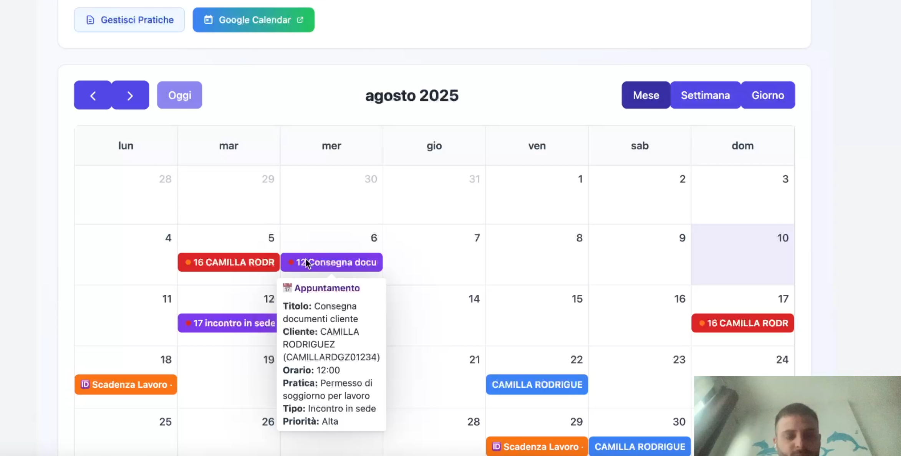

Calendario in PraticaFlow: pianifica il lavoro senza perdere scadenze

Il Calendario di PraticaFlow è l’agenda condivisa dello studio: appuntamenti, scadenze e task in un’unica vista, tutti collegati alle pratiche e ai clienti.
Con la sincronizzazione Google Calendar hai promemoria puntuali e puoi coordinare il team senza perdere nulla di vista.
Funzionalità del Calendario
- Viste flessibili: mensile, settimanale e giornaliera.
- Drag & drop per spostare rapidamente appuntamenti e task.
- Collegamenti intelligenti a pratica e cliente con apertura rapida.
- Promemoria automatici via Google Calendar.
- Filtri per operatore, cliente, pratica e tipo evento.
Routine settimanale consigliata
- Apri la vista settimanale e verifica scadenze e incontri.
- Pianifica i task in base alle priorità delle pratiche.
- Conferma gli appuntamenti e verifica che siano collegati alla pratica giusta.
- Controlla la vista oggi ogni mattina per iniziare con il focus corretto.